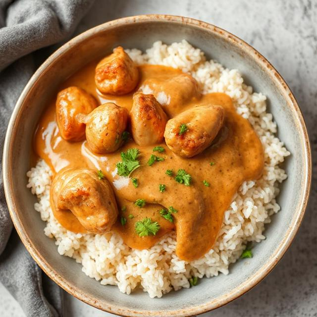
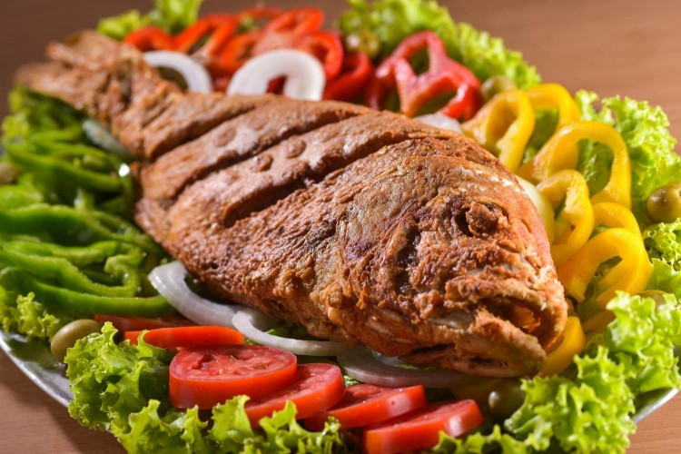
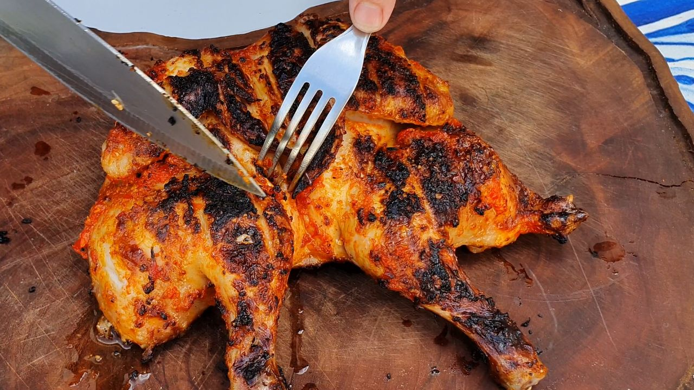
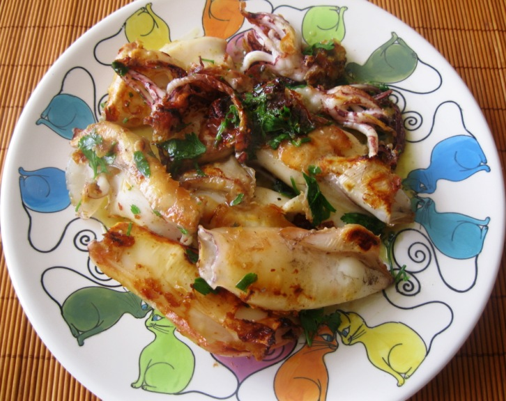

Sabores, memórias e evolução da culinária moçambicana que faz com que lembres da melhor da gastronomia nacional desde os pratos tradicionais aos mais contemporâneos.
A gastronomia moçambicana nasce de uma relação profunda entre o homem, a terra e o mar, refletindo a diversidade cultural e geográfica do país. Ao longo dos séculos, os hábitos alimentares foram moldados pelos recursos naturais disponíveis, pelas tradições locais e pelo contacto com diferentes povos. Mais do que uma simples forma de alimentação, a culinária em Moçambique representa identidade, memória coletiva e transmissão de saberes entre gerações, preservando técnicas ancestrais que ainda hoje fazem parte do quotidiano.
Cozinha baseada em mandioca, milho e peixe.
Introdução de especiarias e coco.
Entrada de arroz, azeite e novas técnicas.
Reinvenção dos pratos tradicionais.
A gastronomia moçambicana é considerada uma das mais ricas da África Austral devido à sua capacidade de integrar diferentes influências culturais sem perder a sua identidade original. Esta fusão de sabores africanos, árabes e europeus criou uma culinária única, marcada pelo uso de ingredientes naturais como mandioca, coco, amendoim e peixe fresco, que continuam a ser a base da alimentação tradicional.
A gastronomia contemporânea em Moçambique representa um equilíbrio entre tradição e inovação. Os chefs modernos têm vindo a reinterpretar receitas tradicionais, incorporando técnicas internacionais e novas formas de apresentação, sem perder a essência cultural dos pratos. Este movimento tem contribuído para a valorização da culinária nacional a nível internacional, transformando pratos tradicionais em experiências gastronómicas sofisticadas e elevando a identidade culinária moçambicana no cenário global.



